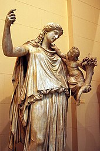

The Difinition of Peace

- Peace is a concept of societal friendship and harmony in the absence of hostility and violence. In a social sense, peace is commonly used to mean a lack of
conflict (such as war) and freedom from fear of violence between individuals or groups. Throughout history, leaders have used peacemaking and diplomacy to
establish a type of behavioral restraint that has resulted in the establishment of regional peace or economic growth through various forms of agreements or
peace treaties. Such behavioral restraint has often resulted in the reduced conflict, greater economic interactivity, and consequently substantial prosperity
- "Psychological peace" (such as peaceful thinking and emotions) is perhaps less well defined, yet often a necessary precursor to establishing "behavioural
peace." Peaceful behaviour sometimes results from a "peaceful inner disposition." Some have expressed the belief that peace can be initiated with a certain
quality of inner tranquility that does not depend upon the uncertainties of daily life.[3] The acquisition of such a "peaceful internal disposition" for oneself and
others can contribute to resolving otherwise seemingly irreconcilable competing interests. Peace is not a state of excitement although we are happy when
excited, but peace is when one's mind is quiet and satisfied.
- In ancient times and more recently, peaceful alliances between different nations were codified through royal marriages.
'' Two examples, Hermodike I c.800BC[7] and Hermodike II c.600BC[8] were Greek princesses from the house of Agamemnon who married kings from what is now Central Turkey. The union of Phrygia / Lydia with Aeolian Greeks resulted in regional peace, which facilitated the transfer of ground-breaking technological skills into Ancient Greece; respectively, the phonetic written script and the minting of coinage (to use a token currency, where the value is guaranteed by the state).[9] Both inventions were rapidly adopted by surrounding nations through further trade and cooperation and have been of fundamental benefit to the progress of civilization.
Discussion of peace is therefore at the same time a discussion on its form.. Is it simply the absence of mass organized killing (war),